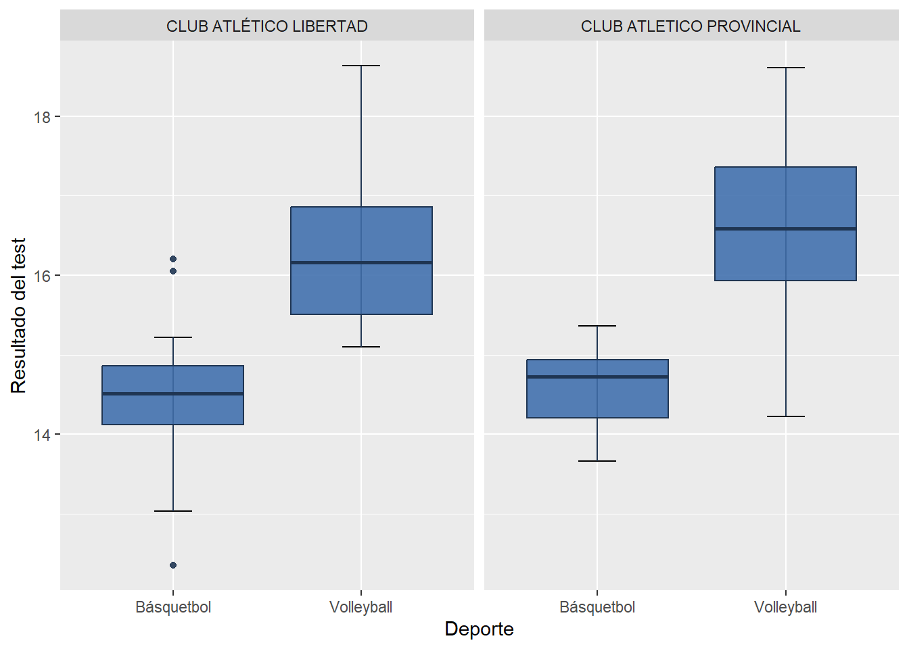
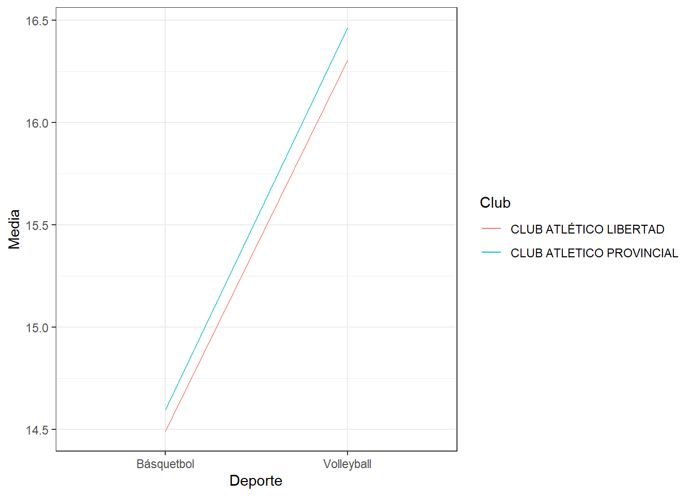
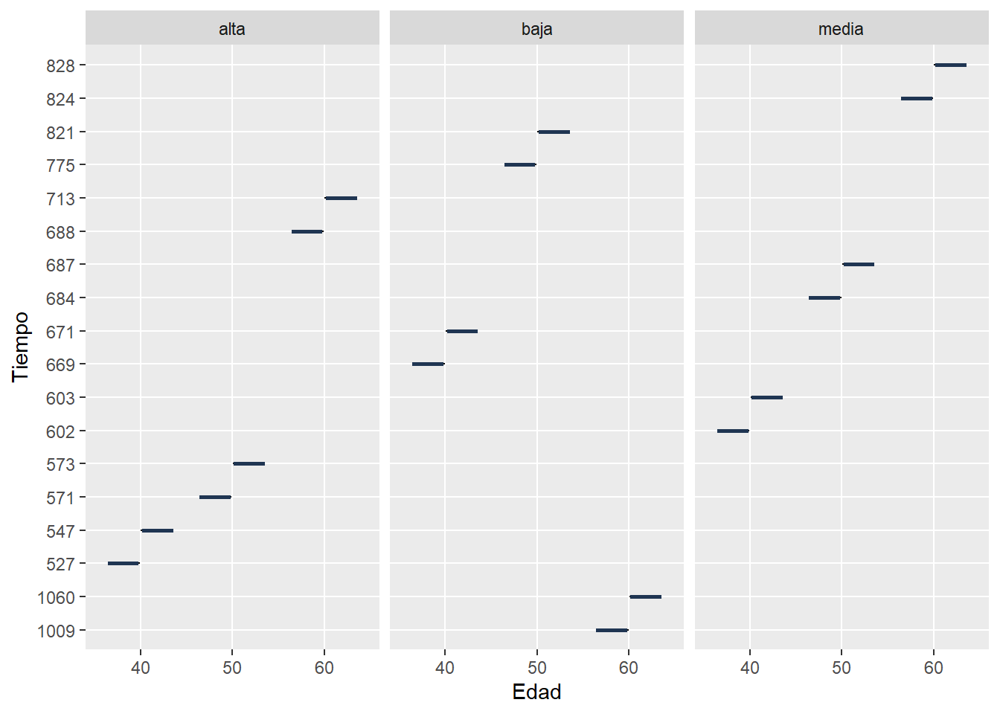
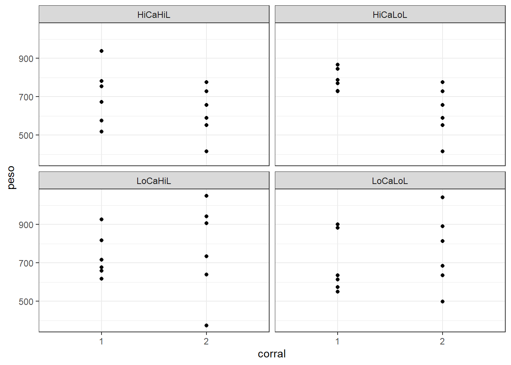

# Librerías
library(readxl)
library(cowplot)
library(tidyverse)Análisis de la Variancia (ANOVA)
Comparación de dos promedios poblacionales
Análisis comparativo en el que se presenta un factor con dos niveles. Cada nivel se refiere a una población diferente. El objetivo es comparar esas poblaciones en función de una variable (respuesta) continua y gaussiana.
Los datos corresponden a una muestra de deportistas federados, de 18 a 22 años, que entrenan y compiten en distintos clubes de la ciudad de Rosario. Se desea conocer si en promedio los hombres tienden a realizar el “Test de Coordinación de 4 tramos de 10 metros cada uno” en menos tiempo (segundos) que las mujeres.
head(base)# A tibble: 6 × 6
id sexo club deporte coord saltar
<dbl> <chr> <chr> <chr> <dbl> <dbl>
1 1 Femenino CLUB DEPORTIVO Y SOCIAL SPORTSMEN UNIDOS Volleyba… 15 32
2 2 Femenino CLUB DEPORTIVO Y SOCIAL SPORTSMEN UNIDOS Volleyba… 15.4 39
3 3 Femenino CLUB DEPORTIVO Y SOCIAL SPORTSMEN UNIDOS Volleyba… 16.3 32
4 4 Femenino CLUB ATLETICO PROVINCIAL Volleyba… 16.0 45
5 5 Femenino NOB Volleyba… 15.2 37
6 6 Femenino CLUB ATLETICO PROVINCIAL Volleyba… 15.1 51En primer lugar, se debe evaluar el cumplimiento de normalidad en ambas poblaciones/muestra/grupos. Se puede comprobar gráficamente a partir de histogramas y también a través de la prueba de Shapiro-Wilks, en el cual se prueba \(H_0) Y \sim \mathcal{N}(\mu,\sigma^2)\) versus \(H_1) Y \nsim \mathcal{N}(\mu,\sigma^2)\). La variable respuesta Y representa el tiempo (en segundos) que tarda un deportista en realizar el test de coordinación.

shapiro.test(base$coord[base$sexo=='Femenino'])
Shapiro-Wilk normality test
data: base$coord[base$sexo == "Femenino"]
W = 0.99027, p-value = 0.4983shapiro.test(base$coord[base$sexo=='Masculino'])
Shapiro-Wilk normality test
data: base$coord[base$sexo == "Masculino"]
W = 0.99461, p-value = 0.8573En este caso, se concluye que en base a la evidencia muestral y con un nivel de significación del \(5\%\) ambas poblaciones se distribuyen de manera normal.
Luego, se estudian medidas descriptivas y gráfico de boxplots para ambos grupos.
# Estadísticas descriptivas
base %>%
group_by(sexo) %>%
summarise(
n = n(),
media = mean(coord),
desvio = sd(coord)
)# A tibble: 2 × 4
sexo n media desvio
<chr> <int> <dbl> <dbl>
1 Femenino 130 15.8 1.22
2 Masculino 149 14.0 1.30# Boxplots
ggplot(base, aes(x = sexo, y = coord)) +
stat_boxplot(geom = "errorbar", # Bigotes
width = 0.2) +
geom_boxplot(fill = "#4271AE", colour = "#1F3552",
alpha = 0.9) +
ggtitle("Boxplots de los tiempos en realizar el test de coordinación según sexo") +
labs(y="Tiempo (en segundos)")
Se puede observar que los tiempos en realizar el test de coordinación en mujeres son levemente mayores que los tiempos obtenidos por los varones. A continuación, se evaluará si esta diferencia es significativa.
Antes de llevar a cabo la prueba de igualdad de medias, se debe chequear si las variancias entre grupos son iguales: \(H_0) \sigma_F^2=\sigma_M^2\) versus \(H_1) \sigma_F^2 \neq \sigma_M^2\).
# Test de igualdad de variancias
var.test(coord ~ sexo, base, alternative = "two.sided")
F test to compare two variances
data: coord by sexo
F = 0.88103, num df = 129, denom df = 148, p-value = 0.4611
alternative hypothesis: true ratio of variances is not equal to 1
95 percent confidence interval:
0.6313037 1.2343574
sample estimates:
ratio of variances
0.8810328 Se cumple la igualdad de variancias, por lo que se postula la prueba de igualdad de medias: \(H_0) \mu_F=\mu_M\) versus \(H_1) \mu_F > \mu_M\).
- 1º enfoque: Prueba “t de student”
# Test de medias
t.test(coord ~ sexo, base, alternative = "greater", var.equal = T)
Two Sample t-test
data: coord by sexo
t = 11.846, df = 277, p-value < 2.2e-16
alternative hypothesis: true difference in means between group Femenino and group Masculino is greater than 0
95 percent confidence interval:
1.540192 Inf
sample estimates:
mean in group Femenino mean in group Masculino
15.79131 14.00181 - 2º enfoque: ANOVA
Se postula el siguiente modelo de efectos fijos: \(y_{ij} = \mu + \tau_i + e_{ij}, \ i=\overline{1,2} \ \land \ j=\overline{1,n_i}\), donde:
- $y_{ij} =$ resultado del test de coordinación del deportista $j$ del grupo $i$.
- $\mu =$ valor de referencia del test de coordinación.
- $\tau_i =$ efecto grupo $i$.
- $e_{ij} =$ error aleatorio del deportista $j$ del grupo $i$.Además, \(e_{ij} \sim \mathcal{N}(0,\sigma^2)\) e independientes.
A continuación, se muestra la tabla ANOVA:
# Tabla ANOVA
anova <- aov(coord~sexo, base)
summary(anova) Df Sum Sq Mean Sq F value Pr(>F)
sexo 1 222.3 222.32 140.3 <2e-16 ***
Residuals 277 438.8 1.58
---
Signif. codes: 0 '***' 0.001 '**' 0.01 '*' 0.05 '.' 0.1 ' ' 1Para ambos enfoques, se obtiene que en base a la evidencia muestral y con un nivel de significación del \(5\%\), se rechaza la hipótesis nula, es decir, en promedio a las mujeres les lleva más tiempo realizar el test de coordinación que a los hombres.
ANOVA para un criterio de clasificación
Análisis comparativo en el que se presenta un factor de clasificación con dos o más niveles. Cada nivel se refiere a una población diferente. El objetivo es comparar dichas poblaciones en función de una variable (respuesta) continua y gaussiana a través de un Análisis de la Variancia (ANOVA).
Los datos brindados corresponden a una muestra de deportistas federados, de 18 a 22 años, que entrenan y compiten en deportes y clubes diferentes de la ciudad de Rosario. Se desea conocer si existen diferencias significativas en el resultado medio del “test de Coordinación en 4 tramos de 10 metros cada tramo” entre los grupos de deportistas. Los cuatro grupos comparados están conformados de la siguiente manera:
- Grupo 1: deportistas jugadores de basquetball del Club Atlético Libertad
- Grupo 2: deportistas jugadores de volleyball del Club Atlético Libertad
- Grupo 3: deportistas jugadores de basquetball del Club Atlético Provincial
- Grupo 4: deportistas jugadores de volleyball del Club Atlético Provincial
# Librerías
library(readxl)
library(cowplot)
library(tidyverse)head(base_grupos)# A tibble: 6 × 7
id sexo club deporte coord saltar grupos
<dbl> <chr> <chr> <chr> <dbl> <dbl> <chr>
1 4 Femenino CLUB ATLETICO PROVINCIAL Volleyball 16.0 45 CAProvincial…
2 6 Femenino CLUB ATLETICO PROVINCIAL Volleyball 15.1 51 CAProvincial…
3 8 Masculino CLUB ATLETICO PROVINCIAL Volleyball 14.7 53 CAProvincial…
4 11 Masculino CLUB ATLETICO PROVINCIAL Volleyball 14.2 43 CAProvincial…
5 12 Femenino CLUB ATLETICO PROVINCIAL Volleyball 18.6 49 CAProvincial…
6 13 Femenino CLUB ATLETICO PROVINCIAL Volleyball 17.6 41 CAProvincial…table(base_grupos$grupos)
CALibertad-basquetball CALibertad-volleyball CAProvincial-basquetball
14 12 14
CAProvincial-volleyball
29 Se evalua el cumplimiento de normalidad en los grupos en estudio. Se puede comprobar a través de la prueba de Shapiro-Wilks, en el cual se prueba \(H_0) Y \sim \mathcal{N}(\mu,\sigma^2)\) versus \(H_1) Y \nsim \mathcal{N}(\mu,\sigma^2)\). La variable respuesta Y representa el tiempo (en segundos) que tarda un deportista en realizar el test de coordinación.
shapiro.test(base_grupos$coord[base_grupos$grupos=='CALibertad-basquetball'])
Shapiro-Wilk normality test
data: base_grupos$coord[base_grupos$grupos == "CALibertad-basquetball"]
W = 0.95211, p-value = 0.594shapiro.test(base_grupos$coord[base_grupos$grupos=='CALibertad-volleyball'])
Shapiro-Wilk normality test
data: base_grupos$coord[base_grupos$grupos == "CALibertad-volleyball"]
W = 0.92313, p-value = 0.3129shapiro.test(base_grupos$coord[base_grupos$grupos=='CAProvincial-basquetball'])
Shapiro-Wilk normality test
data: base_grupos$coord[base_grupos$grupos == "CAProvincial-basquetball"]
W = 0.9574, p-value = 0.6801shapiro.test(base_grupos$coord[base_grupos$grupos=='CAProvincial-volleyball'])
Shapiro-Wilk normality test
data: base_grupos$coord[base_grupos$grupos == "CAProvincial-volleyball"]
W = 0.96929, p-value = 0.5407En este caso, se concluye que en base a la evidencia muestral y con un nivel de significación del \(5\%\) las poblaciones se distribuyen de manera normal.
Luego, se estudian medidas descriptivas y gráfico de boxplots para los cuatro grupos de deportistas.
# Estadísticas descriptivas
base_grupos %>%
group_by(grupos) %>%
summarise(
n = n(),
media = mean(coord),
desvio = sd(coord)
)# A tibble: 4 × 4
grupos n media desvio
<chr> <int> <dbl> <dbl>
1 CALibertad-basquetball 14 14.5 1.02
2 CALibertad-volleyball 12 16.3 1.02
3 CAProvincial-basquetball 14 14.6 0.493
4 CAProvincial-volleyball 29 16.5 1.15 # Boxplots
ggplot(base_grupos, aes(x = grupos, y = coord)) +
stat_boxplot(geom = "errorbar",
width = 0.2) +
geom_boxplot(fill = "#4271AE", colour = "#1F3552",
alpha = 0.9) +
ggtitle("Boxplots de los tiempos en realizar el test de coordinación según grupo de deportistas") +
labs(y="Tiempo (en segundos)", x="Grupos")
Se puede observar que los tiempos en realizar el test de coordinación difieren dependiendo del grupo de deportistas. A continuación, se evaluará si esta diferencia es significativa.
Se plantea el siguiente modelo de efectos fijos: \(y_{ij} = \mu + \tau_i + e_{ij}, \ i=\overline{1,a} \ \land \ j=\overline{1,n_i}\), donde:
\(y_{ij} =\) resultado del test de coordinación del deportista \(j\) del grupo \(i\).
\(\mu =\) valor de referencia del test de coordinación.
\(\tau_i =\) efecto grupo \(i\).
\(e_{ij} =\) error aleatorio del deportista \(j\) del grupo \(i\).
Además, \(e_{ij} \sim \mathcal{N}(0,\sigma^2)\) e independientes.
A continuación, se muestra la tabla ANOVA:
# Tabla ANOVA
anova <- aov(coord~grupos, base_grupos)
summary(anova) Df Sum Sq Mean Sq F value Pr(>F)
grupos 3 58.78 19.594 19.53 3.88e-09 ***
Residuals 65 65.21 1.003
---
Signif. codes: 0 '***' 0.001 '**' 0.01 '*' 0.05 '.' 0.1 ' ' 1El test de hipótesis para responder al objetivo resulta: \(H_0) \tau_a = \tau_b =\tau_c =\tau_d\) versus \(H_1) Al \ menos \ un \ \tau_i \neq del \ resto, i=\overline{1,a}\).
En base a la evidencia muestral y con un nivel de significación del \(5\%\), se rechaza la hipótesis nula, es decir, existen diferencias signficativas en los tiempos que les lleva realizar el test de coordinación en al menos uno de los grupos de deportistas.
Comparaciones múltiples
El problema sobre la comparación de varios grupos que se resuelve a través del ANOVA es interesante y útil, pero no siempre suficiente. En caso de rechazar la hipótesis nula, se concluirá que no todos los tratamientos tienen los mismos promedios poblacionales pero, seguramente, el investigador querrá saber cuál o cuáles son los promedios diferentes o cuáles son iguales entre sí.
Para conocer entre cuales grupos se presentan las diferencias se utilizará el procedimiento de Comparaciones múltiples, el cual tiene como objetivo dar respuesta a las siguientes hipótesis (una vez que se rechazó la igualdad de medias de tratamientos con la prueba F del ANOVA): \(H_0) \mu_i = \mu_{i'}\) versus \(H_1) \mu_i \neq \mu_{i'}, \ i \neq i' \ \land i,i'=\overline{1,a}\).
Se compararán los grupos de deportistas estudiados en la sección 2 de ANOVA para un criterio de clasificación.
# Librería
library(agricolae)Se ajusta el modelo para los datos tal como se planteó en la sección 2 (\(y_{ij} = \mu + \tau_i + e_{ij}, \ i=\overline{1,a} \ \land \ j=\overline{1,n_i}\)).
modelo <- lm(coord~grupos, base_grupos)
summary(modelo)
Call:
lm(formula = coord ~ grupos, data = base_grupos)
Residuals:
Min 1Q Median 3Q Max
-2.2445 -0.5650 0.0350 0.7055 2.3233
Coefficients:
Estimate Std. Error t value Pr(>|t|)
(Intercept) 14.4914 0.2677 54.133 < 2e-16 ***
gruposCALibertad-volleyball 1.8152 0.3940 4.607 1.96e-05 ***
gruposCAProvincial-basquetball 0.1036 0.3786 0.274 0.785
gruposCAProvincial-volleyball 1.9731 0.3260 6.053 7.86e-08 ***
---
Signif. codes: 0 '***' 0.001 '**' 0.01 '*' 0.05 '.' 0.1 ' ' 1
Residual standard error: 1.002 on 65 degrees of freedom
Multiple R-squared: 0.4741, Adjusted R-squared: 0.4498
F-statistic: 19.53 on 3 and 65 DF, p-value: 3.877e-09Se presentan algunos métodos para dar respuesta a nuestra prueba de hipótesis.
# Método de la diferencia mínima significativa (LSD: Least Significant Difference)
LSD <- LSD.test(modelo, "grupos", p.adj = "none")
LSD$statistics
MSerror Df Mean CV
1.0033 65 15.65739 6.39729
$parameters
test p.ajusted name.t ntr alpha
Fisher-LSD none grupos 4 0.05
$means
coord std r se LCL UCL
CALibertad-basquetball 14.49143 1.0188218 14 0.2677019 13.95679 15.02607
CALibertad-volleyball 16.30667 1.0220953 12 0.2891511 15.72919 16.88414
CAProvincial-basquetball 14.59500 0.4933987 14 0.2677019 14.06036 15.12964
CAProvincial-volleyball 16.46448 1.1505328 29 0.1860015 16.09301 16.83595
Min Max Q25 Q50 Q75
CALibertad-basquetball 12.35 16.20 14.125 14.510 14.8600
CALibertad-volleyball 15.10 18.63 15.505 16.165 16.8575
CAProvincial-basquetball 13.66 15.36 14.205 14.725 14.9350
CAProvincial-volleyball 14.22 18.61 15.930 16.590 17.3600
$comparison
NULL
$groups
coord groups
CAProvincial-volleyball 16.46448 a
CALibertad-volleyball 16.30667 a
CAProvincial-basquetball 14.59500 b
CALibertad-basquetball 14.49143 b
attr(,"class")
[1] "group"# Método (prueba) de Duncan
duncan <- duncan.test(modelo, "grupos")
duncan $statistics
MSerror Df Mean CV
1.0033 65 15.65739 6.39729
$parameters
test name.t ntr alpha
Duncan grupos 4 0.05
$duncan
NULL
$means
coord std r se Min Max Q25
CALibertad-basquetball 14.49143 1.0188218 14 0.2677019 12.35 16.20 14.125
CALibertad-volleyball 16.30667 1.0220953 12 0.2891511 15.10 18.63 15.505
CAProvincial-basquetball 14.59500 0.4933987 14 0.2677019 13.66 15.36 14.205
CAProvincial-volleyball 16.46448 1.1505328 29 0.1860015 14.22 18.61 15.930
Q50 Q75
CALibertad-basquetball 14.510 14.8600
CALibertad-volleyball 16.165 16.8575
CAProvincial-basquetball 14.725 14.9350
CAProvincial-volleyball 16.590 17.3600
$comparison
NULL
$groups
coord groups
CAProvincial-volleyball 16.46448 a
CALibertad-volleyball 16.30667 a
CAProvincial-basquetball 14.59500 b
CALibertad-basquetball 14.49143 b
attr(,"class")
[1] "group"# Método de Student-Newman-Keuls
snk <- SNK.test(modelo, "grupos")
snk$statistics
MSerror Df Mean CV
1.0033 65 15.65739 6.39729
$parameters
test name.t ntr alpha
SNK grupos 4 0.05
$snk
NULL
$means
coord std r se Min Max Q25
CALibertad-basquetball 14.49143 1.0188218 14 0.2677019 12.35 16.20 14.125
CALibertad-volleyball 16.30667 1.0220953 12 0.2891511 15.10 18.63 15.505
CAProvincial-basquetball 14.59500 0.4933987 14 0.2677019 13.66 15.36 14.205
CAProvincial-volleyball 16.46448 1.1505328 29 0.1860015 14.22 18.61 15.930
Q50 Q75
CALibertad-basquetball 14.510 14.8600
CALibertad-volleyball 16.165 16.8575
CAProvincial-basquetball 14.725 14.9350
CAProvincial-volleyball 16.590 17.3600
$comparison
NULL
$groups
coord groups
CAProvincial-volleyball 16.46448 a
CALibertad-volleyball 16.30667 a
CAProvincial-basquetball 14.59500 b
CALibertad-basquetball 14.49143 b
attr(,"class")
[1] "group"# Método Tukey o de la “Diferencia Honestamente Significativa (HSD)”
hsd <- HSD.test(modelo, "grupos")
hsd$statistics
MSerror Df Mean CV
1.0033 65 15.65739 6.39729
$parameters
test name.t ntr StudentizedRange alpha
Tukey grupos 4 3.728941 0.05
$means
coord std r se Min Max Q25
CALibertad-basquetball 14.49143 1.0188218 14 0.2677019 12.35 16.20 14.125
CALibertad-volleyball 16.30667 1.0220953 12 0.2891511 15.10 18.63 15.505
CAProvincial-basquetball 14.59500 0.4933987 14 0.2677019 13.66 15.36 14.205
CAProvincial-volleyball 16.46448 1.1505328 29 0.1860015 14.22 18.61 15.930
Q50 Q75
CALibertad-basquetball 14.510 14.8600
CALibertad-volleyball 16.165 16.8575
CAProvincial-basquetball 14.725 14.9350
CAProvincial-volleyball 16.590 17.3600
$comparison
NULL
$groups
coord groups
CAProvincial-volleyball 16.46448 a
CALibertad-volleyball 16.30667 a
CAProvincial-basquetball 14.59500 b
CALibertad-basquetball 14.49143 b
attr(,"class")
[1] "group"Para cualquiera de los métodos presentados, se concluye que con un nivel de significación del 5%, los tiempos medios en realizar el test de coordinación difieren para los deportistas de distintos deportes (basquetball-volleyball), y no difieren entre diferentes clubes (CAL-CAP).
Comprobación de supuestos
La validez de las inferencias extraídas a partir del modelo y su correspondiente ANOVA, las pruebas de hipótesis y los intervalos de confianza, se basan en el cumplimiento de los supuestos postulados. Si el modelo es de efectos fijos, se postula el supuesto de independencia, normalidad e igualdad de variancias para los errores aleatorios.
Como los errores del modelo son desconocidos, la verificación de los mismos se realiza sobre una estimación de esos errores, los que habitualmente denominamos residuos. Se utilizarán los residuos ordinarios (\(\hat e_{ij} = y_{ij}-\bar y_{i.}\)) y los residuos estandarizados (\(w_{ij} = \frac{\hat e_{ij}}{\sqrt{CME}}\)).
# Residuos ordinarios y estandarizados
base_grupos$res <- residuals(modelo)
base_grupos$res_est <- rstandard(modelo)- Normalidad
La normalidad de los residuos se puede probar a través de técnicas gráficas (qq-plot, histogramas) y también a partir de pruebas de hipótesis (Shapiro-Wilks, Lilliefors).
# qq-plot de cuantiles empíricos versus cuantiles teóricos
ggplot(base_grupos,aes(sample=res)) +
stat_qq() +
stat_qq_line() +
theme_bw()
# Test de Shapiro-Wilks (H0) Los errores se distribuyen normales)
shapiro.test(base_grupos$res)
Shapiro-Wilk normality test
data: base_grupos$res
W = 0.98772, p-value = 0.737# Test de Lilliefors (H0) Los errores se distribuyen normales)
library(nortest)
lillie.test(base_grupos$res)
Lilliefors (Kolmogorov-Smirnov) normality test
data: base_grupos$res
D = 0.061547, p-value = 0.7458- Homocedasticidad (variancia constante)
La homocedasticidad de los residuos se puede probar a través de técnicas gráficas (residuos versus valores predichos) y también a partir de pruebas de hipótesis (Levene, Bartlett).
# Gráfico de w_ij vs. predichos
ggplot(base_grupos, aes(x=grupos, y=res_est)) +
geom_point() +
theme_bw()
# Test de Levene (H0) Todas las vcias son iguales vs. H1) Al menos una distina del resto)
library(car)
leveneTest(base_grupos$res_est, group = base_grupos$grupos)Levene's Test for Homogeneity of Variance (center = median)
Df F value Pr(>F)
group 3 2.1288 0.1051
65 - Independencia
La independencia de los errores se estudia a partir de la lógica del problema. En la práctica, por lo general, no se puede verificar debido a que no existe un orden temporal en las observaciones, en tal caso suele ser útil graficar los residuos en función del orden (o momento) en que fue recolectado el dato.
Como este supuesto es difícilmente remediable, es necesario poner mucho esfuerzo en el momento de obtener los datos.
Para nuestro ejemplo, se cumplen los supuestos de normalidad y homocedasticidad. En el caso de que alguno de ellos no se cumpla, se debería recurrir a alguno de los siguientes métodos:
- Transformaciones: Logarítmica, Raíz Cuadrada, etcétera.
- Técnicas no paramétricas: Friedman, Kruskal-Wallis.
- Modelos Lineales Generalizados.
Base deportistas.xlsx
En este link encontrarás la base de datos utilizada para los ejemplos mostrados.
ANOVA para dos criterios de clasificación cruzados sin interacción
Análisis en el que se presentan dos factores de clasificación (con dos o más niveles cada uno). El término cruzado indica que cada nivel de un factor puede combinarse con cada nivel del otro factor. El objetivo es conocer si estos factores influyen en el comportamiento de una variable (respuesta) continua y gaussiana a través de un Análisis de la Variancia (ANOVA).
Los datos brindados corresponden a una muestra de deportistas federados, de 18 a 22 años de la ciudad de Rosario. Se desea conocer si existen diferencias significativas en el resultado medio del “test de Coordinación en 4 tramos de 10 metros cada tramo” entre los deportistas teniendo en cuenta el deporte en el que compiten y el club en el que se entrenan.
- Factor 1: Deporte (Volleyball-Básquetball)
- Factor 2: Club (Club Atlético Libertad-Club Atlético Provincial)
# Librerías
library(readxl)
library(cowplot)
library(tidyverse)head(base_factores)# A tibble: 6 × 7
id sexo club deporte coord saltar grupos
<dbl> <chr> <chr> <chr> <dbl> <dbl> <chr>
1 4 Femenino CLUB ATLETICO PROVINCIAL Volleyball 16.0 45 CAProvincial…
2 6 Femenino CLUB ATLETICO PROVINCIAL Volleyball 15.1 51 CAProvincial…
3 8 Masculino CLUB ATLETICO PROVINCIAL Volleyball 14.7 53 CAProvincial…
4 11 Masculino CLUB ATLETICO PROVINCIAL Volleyball 14.2 43 CAProvincial…
5 12 Femenino CLUB ATLETICO PROVINCIAL Volleyball 18.6 49 CAProvincial…
6 13 Femenino CLUB ATLETICO PROVINCIAL Volleyball 17.6 41 CAProvincial…Se estudian medidas descriptivas y gráficos de boxplots y perfiles para los deportistas según deporte y club.
# Medidas descriptivas
base_factores %>%
group_by(deporte, club) %>%
summarise(
n = n(),
media = mean(coord),
desvio = sd(coord)
) # A tibble: 4 × 5
# Groups: deporte [2]
deporte club n media desvio
<chr> <chr> <int> <dbl> <dbl>
1 Básquetbol CLUB ATLETICO PROVINCIAL 14 14.6 0.493
2 Básquetbol CLUB ATLÉTICO LIBERTAD 14 14.5 1.02
3 Volleyball CLUB ATLETICO PROVINCIAL 29 16.5 1.15
4 Volleyball CLUB ATLÉTICO LIBERTAD 12 16.3 1.02 # Boxplots
ggplot(base_factores, aes(x = deporte, y = coord)) +
stat_boxplot(geom = "errorbar",
width = 0.2) +
facet_wrap(~club) +
geom_boxplot(fill = "#4271AE", colour = "#1F3552",
alpha = 0.9) +
labs(y="Resultado del test", x="Deporte")
# Gráfico de perfiles (para evaluar interacción entre factores)
base_factores %>%
group_by(deporte, club) %>%
summarise(
media = mean(coord)
) %>%
ggplot(aes(x=deporte,y=media,
group=club,
color=club)) +
geom_line() +
theme_bw() +
labs(y="Media", x="Deporte",color="Club")
Se puede observar que los tiempos en realizar el test de coordinación difieren dependiendo del deporte que practican los deportistas, los jugadores de basquetball en promedio realizan el test más rapidamente que los jugadores de volleyball. Con respecto al club, no parece haber diferencias entre los deportistas de clubes distintos.
Se plantea el siguiente modelo de efectos fijos:
\(y_{ijk} = \mu + \tau_i + \beta_j + (\tau \beta)_{ij} + e_{ijk}, \ i=\overline{1,2} \ \land \ j=\overline{1,2}\ \land \ k=\overline{1,n_i}\), donde:
\(y_{ijk}\): resultado en el test de coordinación del \(k-ésimo\) deportista que entrena en \(j\) el deporte \(i\).
\(\mu\): valor de referencia del resultado del test de coordinación.
\(\tau_i\): efecto deporte \(i\).
\(\tau_i\): efecto club \(j\).
\((\tau \beta)_{ij}\): efecto interacción entre el deporte \(i\) y el club \(j\).
\(e_{ijk}\): error aleatorio del \(k-ésimo\) deportista que entrena en \(j\) el deporte \(i\).
Además, \(e_{ijk} \sim \mathcal{N}(0,\sigma^2)\) e independientes.
En este modelo, a través de la interacción, se postula que el efecto de deporte en el resultado del test de coordinación de los deportistas depende del club.
A continuación, se muestra la tabla ANOVA:
# Tabla ANOVA
anova <- aov(coord~deporte*club, base_factores)
summary(anova) Df Sum Sq Mean Sq F value Pr(>F)
deporte 1 58.50 58.50 58.304 1.3e-10 ***
club 1 0.28 0.28 0.274 0.602
deporte:club 1 0.01 0.01 0.011 0.916
Residuals 65 65.21 1.00
---
Signif. codes: 0 '***' 0.001 '**' 0.01 '*' 0.05 '.' 0.1 ' ' 1# Modelo estimado
modelo <- lm(coord~deporte*club, base_factores)
summary(modelo)
Call:
lm(formula = coord ~ deporte * club, data = base_factores)
Residuals:
Min 1Q Median 3Q Max
-2.2445 -0.5650 0.0350 0.7055 2.3233
Coefficients:
Estimate Std. Error t value
(Intercept) 14.49143 0.26770 54.133
deporteVolleyball 1.81524 0.39405 4.607
clubCLUB ATLETICO PROVINCIAL 0.10357 0.37859 0.274
deporteVolleyball:clubCLUB ATLETICO PROVINCIAL 0.05424 0.51140 0.106
Pr(>|t|)
(Intercept) < 2e-16 ***
deporteVolleyball 1.96e-05 ***
clubCLUB ATLETICO PROVINCIAL 0.785
deporteVolleyball:clubCLUB ATLETICO PROVINCIAL 0.916
---
Signif. codes: 0 '***' 0.001 '**' 0.01 '*' 0.05 '.' 0.1 ' ' 1
Residual standard error: 1.002 on 65 degrees of freedom
Multiple R-squared: 0.4741, Adjusted R-squared: 0.4498
F-statistic: 19.53 on 3 and 65 DF, p-value: 3.877e-09El test de hipótesis para responder al efecto interacción se plantea como: \(H_0)\) No hay interacción versus \(H_1)\) Hay interacción. Que no haya interacción es que el efecto deporte es el mismo para cualquier club: \(\mu_{11} - \mu_{21} = \mu_{12} - \mu_{22}\), luego la hipótesis en términos de los parámetros resulta: \(H_0) \mu_{11} - \mu_{21} = \mu_{12} - \mu_{22}\)
En base a la evidencia muestral y con un nivel de significación del \(5\%\), no se rechaza la hipótesis nula, es decir, no hay efecto interacción entre deporte y club. El efecto del deporte sobre el cambio del resultado del test de coordinación de los deportistas no depende del club en el que entrenan.
Como la interacción del modelo no resultó significativa, se puede proceder a probar que sucede con los efectos principales, a partir de las siguientes hipótesis:
Efecto Deporte: \(H_0) \ \tau_{1} = \tau_{2}\) vs. \(H_1) \ \tau_{1} \neq \tau_{2}\)
Efecto Club: \(H_0) \ \beta_{1} = \beta_{2}\) vs. \(H_1) \ \beta_{1} \neq \beta_{2}\)
En base a la evidencia muestral y con un nivel de significación del \(5\%\), se concluye que el deporte que practica el deportista influye significativamente sobre el resultado en el test de coordinación. En cambio, el club en el cual entrenan no influye significativamente sobre la respuesta.
Comparaciones múltiples
En este caso, como el único efecto principal que resultó significativo fue ‘Deporte’ y este sólo tiene dos niveles no tendría sentido realizar comparaciones múltiples. A fines de mostrar como se continuaría el análisis, se presentan comparaciones múltiples pensando en que la interacción entre los factores hubiera sido significativa. Se comparan 6 medias, cruzando los niveles de ambos factores: \(H_0) \ \mu_{ij} = \mu_{i'j'}\) versus \(H_1) \ \mu_{ij} \neq \mu_{i'j'}, \ \forall \ i < i' \ , \ j<j'\)
library(emmeans)
cm <- emmeans(modelo, pairwise~deporte*club, adjust="tukey")
confint(cm)$emmeans
deporte club emmean SE df lower.CL upper.CL
Básquetbol CLUB ATLÉTICO LIBERTAD 14.5 0.268 65 14.0 15.0
Volleyball CLUB ATLÉTICO LIBERTAD 16.3 0.289 65 15.7 16.9
Básquetbol CLUB ATLETICO PROVINCIAL 14.6 0.268 65 14.1 15.1
Volleyball CLUB ATLETICO PROVINCIAL 16.5 0.186 65 16.1 16.8
Confidence level used: 0.95
$contrasts
contrast
Básquetbol CLUB ATLÉTICO LIBERTAD - Volleyball CLUB ATLÉTICO LIBERTAD
Básquetbol CLUB ATLÉTICO LIBERTAD - Básquetbol CLUB ATLETICO PROVINCIAL
Básquetbol CLUB ATLÉTICO LIBERTAD - Volleyball CLUB ATLETICO PROVINCIAL
Volleyball CLUB ATLÉTICO LIBERTAD - Básquetbol CLUB ATLETICO PROVINCIAL
Volleyball CLUB ATLÉTICO LIBERTAD - Volleyball CLUB ATLETICO PROVINCIAL
Básquetbol CLUB ATLETICO PROVINCIAL - Volleyball CLUB ATLETICO PROVINCIAL
estimate SE df lower.CL upper.CL
-1.815 0.394 65 -2.854 -0.776
-0.104 0.379 65 -1.102 0.895
-1.973 0.326 65 -2.833 -1.114
1.712 0.394 65 0.673 2.751
-0.158 0.344 65 -1.064 0.749
-1.869 0.326 65 -2.729 -1.010
Confidence level used: 0.95
Conf-level adjustment: tukey method for comparing a family of 4 estimates Como era de esperarse, las comparaciones que resultan significatiavas (el intervalo de confianza de los pares comparados no cubre al cero) son las que comparan diferentes deportes.
El análisis se finaliza con la comprobación de los supuestos de normalidad, homocedasticidad e independencia.
ANOVA para dos criterios de clasificación cruzados con interacción
Análisis en el que se presentan dos factores de clasificación (con dos o más niveles cada uno). El término cruzado indica que cada nivel de un factor puede combinarse con cada nivel del otro factor. El objetivo es conocer si estos factores influyen en el comportamiento de una variable (respuesta) continua y gaussiana a través de un Análisis de la Variancia (ANOVA).
Steel y Torrie (1980, págs. 217-218) informaron datos (cortesía de A.c. Linnerud, Universidad Estatal de Carolina del Norte) sobre los tiempos (en segundos) para completar un recorrido de 1,5 millas. Todos los corredores eran hombres clasificados en tres grupos de edad y en tres categorías de fitness.
- Factor 1: Grupo etario (40-50-60)
- Factor 2: Categoría de fitness (baja-media-alta)
# Librerías
library(cowplot)
library(tidyverse)
library(agricolae)
library(emmeans)head(base_fitness) edad categoria tiempo
1 40 baja 669
2 40 baja 671
3 40 media 602
4 40 media 603
5 40 alta 527
6 40 alta 547Se estudian medidas descriptivas y gráficos de boxplots y perfiles para los corredores según edad y categoría.
# Medidas descriptivas
base_fitness %>%
group_by(edad, categoria) %>%
summarise(
n = n(),
media = mean(tiempo),
desvio = sd(tiempo)
) # A tibble: 9 × 5
# Groups: edad [3]
edad categoria n media desvio
<chr> <chr> <int> <dbl> <dbl>
1 40 alta 2 NA 14.1
2 40 baja 2 NA 1.41
3 40 media 2 NA 0.707
4 50 alta 2 NA 1.41
5 50 baja 2 NA 32.5
6 50 media 2 NA 2.12
7 60 alta 2 NA 17.7
8 60 baja 2 NA 36.1
9 60 media 2 NA 2.83 # Boxplots. Ojo! Sólo hay dos observaciones por grupo
ggplot(base_fitness, aes(x = edad, y = tiempo)) +
stat_boxplot(geom = "errorbar",
width = 0.2) +
facet_wrap(~categoria) +
geom_boxplot(fill = "#4271AE", colour = "#1F3552",
alpha = 0.9) +
labs(y="Tiempo", x="Edad")
# Gráfico de perfiles (para evaluar interacción entre factores)
base_fitness %>%
group_by(edad, categoria) %>%
summarise(
media = mean(tiempo)
) %>%
ggplot(aes(x=edad,y=media,
group=categoria,
color=categoria)) +
geom_line() +
theme_bw() +
labs(y="Media", x="Edad",color="Categoria")
Se puede observar que los tiempos en realizar la prueba de 1.5 millas …
Se plantea el siguiente modelo de efectos fijos:
\(y_{ijk} = \mu + \tau_i + \beta_j + (\tau \beta)_{ij} + e_{ijk}, \ i=\overline{1,3} \ \land \ j=\overline{1,3}\ \land \ k=\overline{1,2}\), donde:
\(y_{ijk}\): tiempo en realizar la prueba de 1.5 millas del \(k-ésimo\) corredor con \(i\) años de la categoría \(j\).
\(\mu\): valor de referencia del tiempo en realizar la prueba de 1.5 millas.
\(\tau_i\): efecto edad \(i\).
\(\beta_j\): efecto categoría \(j\).
\((\tau \beta)_{ij}\): efecto interacción entre el edad \(i\) y el categoría \(j\).
\(e_{ijk}\): error aleatorio del \(k-ésimo\) corredor con \(i\) años de la categoría \(j\).
Además, \(e_{ijk} \sim \mathcal{N}(0,\sigma^2)\) e independientes.
En este modelo, a través de la interacción, se postula que el efecto de la edad del corredor en el tiempo que tarda en alcanzar las 1.5 millas depende de su categoría.
A continuación, se muestra la tabla ANOVA:
# Tabla ANOVA
anova <- aov(tiempo~edad*categoria, base_fitness)
summary(anova) Df Sum Sq Mean Sq F value Pr(>F)
edad 2 195733 97866 304.99 5.39e-09 ***
categoria 2 160867 80434 250.66 1.28e-08 ***
edad:categoria 4 21752 5438 16.95 0.000321 ***
Residuals 9 2888 321
---
Signif. codes: 0 '***' 0.001 '**' 0.01 '*' 0.05 '.' 0.1 ' ' 1# Modelo estimado
modelo <- lm(tiempo~edad*categoria, base_fitness)
summary(modelo)
Call:
lm(formula = tiempo ~ edad * categoria, data = base_fitness)
Residuals:
Min 1Q Median 3Q Max
-25.500 -1.875 0.000 1.875 25.500
Coefficients:
Estimate Std. Error t value Pr(>|t|)
(Intercept) 537.00 12.67 42.395 1.13e-11 ***
edad50 35.00 17.91 1.954 0.08246 .
edad60 163.50 17.91 9.127 7.61e-06 ***
categoriabaja 133.00 17.91 7.425 4.00e-05 ***
categoriamedia 65.50 17.91 3.656 0.00526 **
edad50:categoriabaja 93.00 25.33 3.671 0.00515 **
edad60:categoriabaja 201.00 25.33 7.934 2.36e-05 ***
edad50:categoriamedia 48.00 25.33 1.895 0.09065 .
edad60:categoriamedia 60.00 25.33 2.368 0.04202 *
---
Signif. codes: 0 '***' 0.001 '**' 0.01 '*' 0.05 '.' 0.1 ' ' 1
Residual standard error: 17.91 on 9 degrees of freedom
Multiple R-squared: 0.9924, Adjusted R-squared: 0.9857
F-statistic: 147.4 on 8 and 9 DF, p-value: 1.257e-08El test de hipótesis para responder al efecto interacción se plantea como: \(H_0)\) No hay interacción versus \(H_1)\) Hay interacción. Que no haya interacción es que el efecto edad es el mismo para cualquier categoría.
En base a la evidencia muestral y con un nivel de significación del \(5\%\), se rechaza la hipótesis nula, es decir, hay efecto interacción entre edad y categoría. El efecto de la edad sobre el cambio del tiempo en realizar las 1.5 millas de los corredores depende de la categoría en la que se encuentran.
Como la interacción del modelo resultó significativa, no se prueban los efectos principales.
Comparaciones múltiples
Para comparar los niveles de edad dentro de cada categoría y viceversa, planteamos las siguientes comparaciones:
joint_tests(modelo, by = "edad")edad = 40:
model term df1 df2 F.ratio p.value
categoria 2 9 27.565 0.0001
edad = 50:
model term df1 df2 F.ratio p.value
categoria 2 9 79.586 <.0001
edad = 60:
model term df1 df2 F.ratio p.value
categoria 2 9 177.401 <.0001joint_tests(modelo, by = "categoria")categoria = alta:
model term df1 df2 F.ratio p.value
edad 2 9 46.194 <.0001
categoria = baja:
model term df1 df2 F.ratio p.value
edad 2 9 213.133 <.0001
categoria = media:
model term df1 df2 F.ratio p.value
edad 2 9 79.551 <.0001emm_s.t <- emmeans(modelo, pairwise ~ edad | categoria)
emm_s.t$emmeans
categoria = alta:
edad emmean SE df lower.CL upper.CL
40 537 12.7 9 508 566
50 572 12.7 9 543 601
60 700 12.7 9 672 729
categoria = baja:
edad emmean SE df lower.CL upper.CL
40 670 12.7 9 641 699
50 798 12.7 9 769 827
60 1034 12.7 9 1006 1063
categoria = media:
edad emmean SE df lower.CL upper.CL
40 602 12.7 9 574 631
50 686 12.7 9 657 714
60 826 12.7 9 797 855
Confidence level used: 0.95
$contrasts
categoria = alta:
contrast estimate SE df t.ratio p.value
edad40 - edad50 -35 17.9 9 -1.954 0.1795
edad40 - edad60 -164 17.9 9 -9.127 <.0001
edad50 - edad60 -128 17.9 9 -7.173 0.0001
categoria = baja:
contrast estimate SE df t.ratio p.value
edad40 - edad50 -128 17.9 9 -7.146 0.0001
edad40 - edad60 -364 17.9 9 -20.348 <.0001
edad50 - edad60 -236 17.9 9 -13.202 <.0001
categoria = media:
contrast estimate SE df t.ratio p.value
edad40 - edad50 -83 17.9 9 -4.633 0.0032
edad40 - edad60 -224 17.9 9 -12.477 <.0001
edad50 - edad60 -140 17.9 9 -7.843 0.0001
P value adjustment: tukey method for comparing a family of 3 estimates emm_s.t1 <- emmeans(modelo, pairwise ~ categoria | edad)
emm_s.t1$emmeans
edad = 40:
categoria emmean SE df lower.CL upper.CL
alta 537 12.7 9 508 566
baja 670 12.7 9 641 699
media 602 12.7 9 574 631
edad = 50:
categoria emmean SE df lower.CL upper.CL
alta 572 12.7 9 543 601
baja 798 12.7 9 769 827
media 686 12.7 9 657 714
edad = 60:
categoria emmean SE df lower.CL upper.CL
alta 700 12.7 9 672 729
baja 1034 12.7 9 1006 1063
media 826 12.7 9 797 855
Confidence level used: 0.95
$contrasts
edad = 40:
contrast estimate SE df t.ratio p.value
alta - baja -133.0 17.9 9 -7.425 0.0001
alta - media -65.5 17.9 9 -3.656 0.0131
baja - media 67.5 17.9 9 3.768 0.0111
edad = 50:
contrast estimate SE df t.ratio p.value
alta - baja -226.0 17.9 9 -12.616 <.0001
alta - media -113.5 17.9 9 -6.336 0.0004
baja - media 112.5 17.9 9 6.280 0.0004
edad = 60:
contrast estimate SE df t.ratio p.value
alta - baja -334.0 17.9 9 -18.645 <.0001
alta - media -125.5 17.9 9 -7.006 0.0002
baja - media 208.5 17.9 9 11.639 <.0001
P value adjustment: tukey method for comparing a family of 3 estimates El análisis se finaliza con la comprobación de los supuestos de normalidad, homocedasticidad e independencia.
ANOVA para factores anidados
Damon y Harvey (1987, p. 26) presentaron datos sobre el aumento de peso de pollos sometidos a cuatro tratamientos de alimentación. Los datos originales fueron proporcionados por el Dr. Donald L. Anderson del Departamento de Veterinaria y Ciencias Animales de la Universidad de Massachusetts.
El experimento implicó la determinación de las ganancias de peso (en gramos) de 10 a 20 semanas de pollos colocados en cuatro tratamientos de alimentación obtenidos de combinaciones de calcio y lisina altos y bajos. Las determinaciones de peso se realizaron utilizando seis pollos en dos corrales de cada uno de los cuatro tratamientos de alimentación. Se puede considerar que los corrales se encuentran anidados dentro de cada tratamientos.
# Librerías
library(readxl)
library(tidyverse)pollos <- read_excel("C:/Users/Usuario/Desktop/Facultad Flor/Anova/pollos.xlsx", col_types = c("text",
"text", "numeric"))Se realiza un análisis descriptivo para estudiar la relación entre los tratamientos, los corrales y el aumento de peso de los pollos.
ggplot(pollos, aes(x = corral, y = peso))+
geom_point()+
facet_wrap(~tratamiento)+
theme_bw()
Se plantea el siguiente modelo de efectos fijos:
\(y_{ijk} = \mu + \tau_i + \beta_{j(i)} + e_{ijk}, \ i=\overline{1,4} \ \land \ j=\overline{1,2}\ \land \ k=\overline{1,6}\), donde:
\(y_{ijk}\): aumento en el peso del \(k-ésimo\) pollo sometidos al \(i-ésimo\) tratamiento en el corral \(j-ésimo\).
\(\mu\): valor de referencia del aumento en el peso.
\(\tau_i\): efecto del tratamiento \(i\).
\(\beta_{j(i)}\): efecto del corral \(j\) correspondiente al tratamiento \(i\).
\(e_{ijk}\): error aleatorio del \(k-ésimo\) pollo sometidos al \(i-ésimo\) tratamiento en el corral \(j-ésimo\).
Además, \(e_{ijk} \sim \mathcal{N}(0,\sigma^2)\) e independientes.
En este modelo se postula que los corrales se encuentran anidados a los tratamientos.
La tabla ANOVA del modelo considerado es el siguiente:
# Tabla ANOVA
anova <- aov(peso ~ tratamiento/corral, pollos)
summary(anova) Df Sum Sq Mean Sq F value Pr(>F)
tratamiento 3 53943 17981 0.732 0.539
tratamiento:corral 4 125688 31422 1.279 0.294
Residuals 40 982654 24566 # Modelo estimado
m1 <- lm(peso ~ tratamiento/corral, pollos)
summary(m1)
Call:
lm(formula = peso ~ tratamiento/corral, data = pollos)
Residuals:
Min 1Q Median 3Q Max
-401.50 -77.42 -24.33 109.00 280.33
Coefficients:
Estimate Std. Error t value Pr(>|t|)
(Intercept) 706.83 63.99 11.046 1.01e-13 ***
tratamientoHiCaLoL 81.17 90.49 0.897 0.3751
tratamientoLoCaHiL 28.83 90.49 0.319 0.7517
tratamientoLoCaLoL -14.17 90.49 -0.157 0.8764
tratamientoHiCaHiL:corral2 -86.83 90.49 -0.960 0.3430
tratamientoHiCaLoL:corral2 -168.00 90.49 -1.857 0.0708 .
tratamientoLoCaHiL:corral2 38.83 90.49 0.429 0.6701
tratamientoLoCaLoL:corral2 68.00 90.49 0.751 0.4568
---
Signif. codes: 0 '***' 0.001 '**' 0.01 '*' 0.05 '.' 0.1 ' ' 1
Residual standard error: 156.7 on 40 degrees of freedom
Multiple R-squared: 0.1546, Adjusted R-squared: 0.006597
F-statistic: 1.045 on 7 and 40 DF, p-value: 0.4163En base a la evidencia muestral, con un nivel de significación del 5%, se concluye que no hay efecto significativo de los corrales sobre el aumento de peso de los pollos. Además, los tratamientos no muestran diferencias significativas en la respuesta estudiada.
En el caso de que el efecto tratamiento sea significativo, se podría continuar realizando comparaciones múltiples o contrastes.
El análisis se finaliza con la comprobación de los supuestos de normalidad, homocedasticidad e independencia.